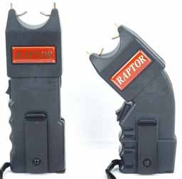

E a Segurança Pública está finalmente embarcando na era moderna dos equipamentos não letais para uso urbano. Já há algum tempo a Polícia do Rio conta com Sprays de Pimenta, e Bombas de Gás Lacrimogêneo, que se mostram extremamente eficientes para conter atos de violência e/ou vandalismo de pessoas, em tese, de boa índole. Isso é muito bom, pois permite que o policial atinja o objetivo de sua missão sem que seja necessário se expor e acabar usando a força física com excesso e ainda responder por Abuso de Autoridade.
Agora novas armas não letais estão sendo integradas ao equipamento policial, não obstante já ser uma realidade antiga nos países desenvolvidos. Como dizem, antes tarde do que nunca. Mas como funciona a arma de choque?
Como aprendemos em biologia, o funcionamento de nossos músculos (voluntários) se dá de acordo com as ordens do cérebro, através do sistema nervoso. Basicamente o cérebro envia sinais elétricos pelas células nervosas em direção aos músculos, mandando que estes contraiam ou retraiam. A idéia da arma de choque é fazer com que esse sistema de comunicação seja interrompido ou confundido.
Atualmente existem diversos tipos de armas de choque, mas os sistemas mais comuns são a Taser Guns (armas Taser) e as Stun Guns (armas de choque).
As armas de choque (Stun Guns) são as que mais vemos serem usadas em filmes de Hollywood (veja imagem ao lado). Na extremidade que toca o corpo do agressor existem dois eletrodos, que possuem uma diferença de tensão entre si. Quando estas pontas tocam no corpo do agressor a corrente é fechada, e os pulsos elétricos tentarão se mover de um eletrodo para outro, gerando uma descarga elétrica no indivíduo, com tensão suficiente para tingir o corpo inteiro.Já nas Armas Taser (clique para ver foto) os eletrodos ficam presos na arma e ligados por um fio. Ao pressionar-se um gatilho, os eletrodos são disparados por ar comprimido (idêntico às armas de chumbinho), e prendem-se ao corpo do agressor, conectadas aos fios, e da mesma forma que na Stun Gun, a corrente elétrica passa de um eletrodo para o outro e através dos fios, sendo que o corpo do agressor é o condutor dessa eletricidade.
{kind=link}
Veja por exemplo aqui neste vídeo de demonstração da Arma Taser em dedicados militares cariocas que serviram de cobaia. Você é um deles? :)
Ou ainda, veja este vídeo com a Taser Gun em uma situação real. O policial americano tenta imobilizar e algemar o suspeito, porém este se recusa a colocar as mãos para trás, e só aceita depois que o policial pede de maneira educada. Divirta-se.
Existem ainda as armas de choque a líquido, mas é um conceito muito recente e ainda em desenvolvimento, mas é basicamente o mesmo, só que a descarga elétrica é feita através de jatos líquidos.
Eu coletei essas informações neste site, onde você poderá analisar detalhes mais técnicos.
Mas você já pensou poder montar em casa sua própria arma de choque?